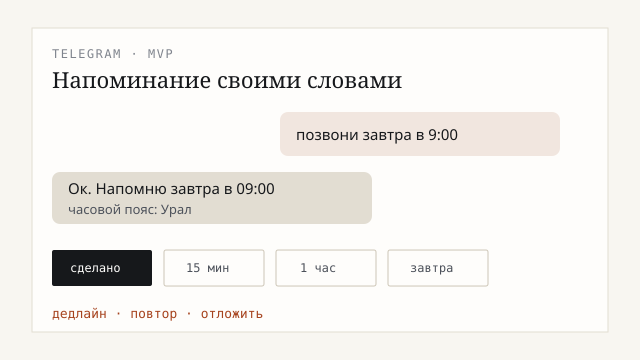

Кейс · 03
Telegram-бот напоминаний о делах и оплатах
Для руководителя, бухгалтера и менеджера: нужно не забывать сроки и оплаты без тяжёлой CRM — пишете задачу своими словами, бот напоминает.
- Статус
- рабочий MVP
- Часовой пояс
- Урал
- Где живёт
- в облаке

Что сделал
Пишете боту задачу своими словами: «завтра в 9:00 позвонить». Он напомнит, можно отложить на 15 минут или на день, отметить «сделано», поставить повтор каждый день / неделю / месяц. Даты понимает по-русски. Отдельный сервер не нужен.
Что на выходе
- Создание задачи → напоминание → «сделано»
- Кнопки «сделано / 15 мин / 1 час / завтра»
- Повторы: день, неделя, месяц
- Свободный ввод даты на русском
Нужны напоминания без CRM? Опишите задачу →